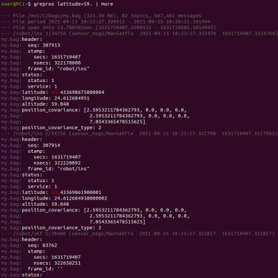

grep for ROS bag files and live topics
Index
Installation
Using the program
Matching and filtering
Outputs
Command-line options
Plugins
Changelog
API documentation
View the Project on GitHub suurjaak/grepros
Searches through ROS messages and matches any message field value by regular expression patterns or plain text, regardless of field type. Can also look for specific values in specific message fields only.
By default, matches are printed to console. Additionally, matches can be written to a bagfile or HTML/CSV/Parquet/Postgres/SQL/SQLite, or published to live topics.
Supports both ROS1 and ROS2. ROS environment variables need to be set, at least ROS_VERSION.
In ROS1, messages can be grepped even if Python packages for message types are not installed. Using ROS1 live topics requires ROS master to be running.
Using ROS2 requires Python packages for message types to be available in path.
Supports loading custom plugins, mainly for additional output formats.
In ROS1, message type packages do not need to be installed locally to be able to read messages from bags or live topics, as bags and topic publishers provide message type definition texts, and message classes can be generated at run-time from the type definition text. This is what rosbag does automatically, and so does grepros.
Additionally, each ROS1 message type has a hash code computed from its type definition text, available both in live topic metadata, and bag metadata. The message type definition hash code allows to recognize changes in message type packages and use the correct version of the message type.
ROS2 does not provide message type definitions, neither in bagfiles nor in live topics. Due to this, the message type packages always need to be installed. Also, ROS2 does not provide options for generating type classes at run-time, and it does not have the concept of a message type hash.
These are serious limitations in ROS2 compared to ROS1, at least with versions up to ROS2 Humble and counting, and require extra work to smooth over. Without knowing which version of a message type package a bag was recorded with, reading bag messages with changed definitions can result in undefined behaviour.
If the serialized message structure happens to match (e.g. a change swapped
the order of two int32 fields), messages will probably be deserialized
seemingly successfully but with invalid content. If the serialized structure
does not match, the result is a run-time error.
Because of this, it is prudent to always include a snapshot archive of used message type packages, when recording ROS2 bags.
grepros does provide the message type hash itself in ROS2 exports, by calculating the ROS2 message type hash on its own from the locally installed type definition.
grepros is written in Python.
Includes a modified version of step, Simple Template Engine for Python,
(c) 2012, Daniele Mazzocchio, github.com/dotpy/step,
released under the MIT license.
(The 3-Clause BSD License)
Copyright (C) 2021 by Erki Suurjaak. All rights reserved.
Redistribution and use in source and binary forms, with or without modification, are permitted provided that the following conditions are met:
This software is provided by the copyright holders and contributors "as is" and any express or implied warranties, including, but not limited to, the implied warranties of merchantability and fitness for a particular purpose are disclaimed. In no event shall the copyright holder or contributors be liable for any direct, indirect, incidental, special, exemplary, or consequential damages (including, but not limited to, procurement of substitute goods or services; loss of use, data, or profits; or business interruption) however caused and on any theory of liability, whether in contract, strict liability, or tort (including negligence or otherwise) arising in any way out of the use of this software, even if advised of the possibility of such damage.
{kind=link}